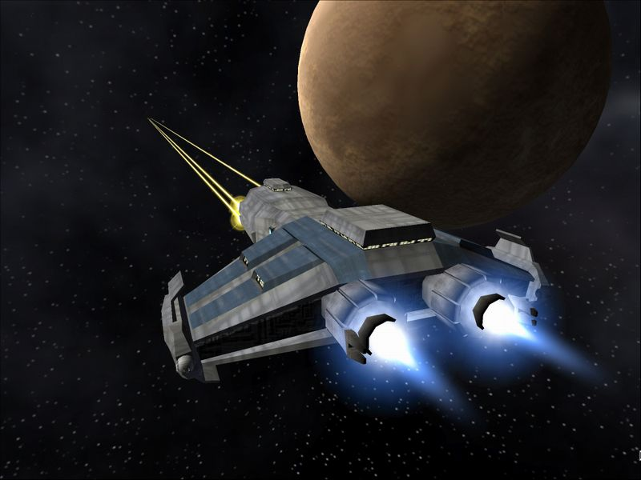
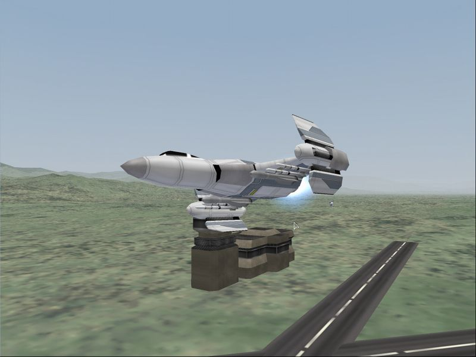
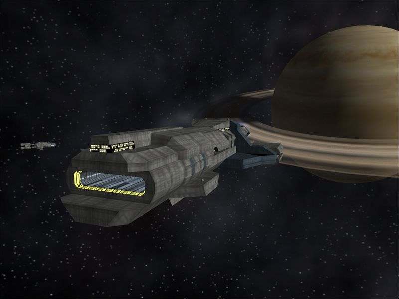

Игры, создаваемые одиночками, зачастую оказываются "темными лошадками". На эти игры не выделяются огромные бюджеты, у них нет жестких сроков разработки, зачастую такие проекты являются своеобразным хобби, ни к чему не обязывающим. Другое дело, что многие из аспектов, которые некоторые посчитают недостатками, на деле оказываются достоинствами: например, поскольку автор игры не обременен никакими сроками, у него есть вагон времени на то, чтобы проработать ту или иную часть геймплея. В результате на свет периодически появляются настоящие шедевры, вспомните хотя бы недавний "Лохотронщик".
Похоже, что такой шедевр намечается в жанре космических симуляторов. Речь идет о Starshatter, проекте, неспешная разработка которого идет уже третий год.
В авангарде
Любительские космосимы являются не слишком уж редким явлением. Проблема в том, что их разработчики чаще всего не до конца сознают, чего же они хотят создать, да и особыми красотами эти произведения не отличаются. На фоне этих работ Starshatter выглядит примерно так же, как "Мерседес" по сравнению с "Запорожцем". Создающий эту игру Джон ДиКамилло никуда не торопится: за все время было всего пара-тройка версий, каждая из которых на голову превосходила предшественника. К примеру, нынешний (3.0.4) вариант обзавелся аж двумя кампаниями, кроме того, был достаточно сильно переработан код.

Огонь, мистер Спок!
Честно говоря, Starshatter своей концепцией несколько напоминает серию космических симуляторов Battlecruiser. Правда, Battlecruiser по своей идее тяготеет к Elite, что же касается творения ДиКамилло, то для него, судя по всему, источником вдохновения служит Wing Commander. Объединяет эти игры одно: и в Battlecruiser, и в Starshatter досконально проработана любая мелочь, ничто не ускользает от взгляда разработчиков. Самое же главное, у игрока имеется свобода действий, его никто не пытается зажать в жесткие рамки задания. К примеру, во время выполнения задания можно спуститься в нижние слои атмосферы, приземлиться, если, конечно, на поверхности есть база, а потом снова подняться в космос. Причем переход из атмосферы в космос и обратно выполнен очень естественно.
Вот уж чем Starshatter выгодно отличается от произведения Дерека Смарта, так это графикой. ДиКамилло скромничает, говоря о том, что игра, в принципе, рассчитана на не слишком мощный компьютер с более чем демократичной видеокартой Riva TNT2. Скромность эта ложная: подавляющее большинство космосимов среднего эшелона по сравнению со Starshatter просто не котируются, взгляните на скриншоты, и вы поймете, о чем я говорю. Несмотря на "минималистские" заявления, ДиКамилло наделил свое детище массой прогрессивных вещей, скажем, взрывы здесь не спрайтовые, они состоят из частиц (particles) и выглядят впечатляюще. Что же касается проработки земной поверхности, то по этому показателю у Starshatter вне конкуренции. Это и не удивительно, поскольку значительная часть миссий проходит в плотных слоях атмосферы.

На бреющем полете
Что же касается космоса, то он не выглядит, как мешанина ярких красок, туманностей в нем немного, большую его часть занимает вселенская чернота. Тем не менее, никакой игры в прятки ожидать не приходится: каждый корабль "подсвечен" специальным маркером, позволяющим легко определить, кто перед тобой, друг, или враг. Еще одним удобством интерфейса Starshatter являются специальные линии, показывающие траектории кораблей, нечто подобное можно было увидеть в Independence War 2: The Edge of Chaos. С их помощью можно легко вычислить курс цели и открыть огонь на упреждение. В остальном интерфейс Starshatter повторяет привычную схему, оно и правильно, не зря говоря, что лучшее - враг хорошего. Еще одним преимуществом Starshatter является универсальность управления. Игра, помимо управления клавиатурой и мышкой, может похвастаться поддержкой джойстиков практически любого типа. Правда, в данной версии игры переназначить клавиши на любимом Thrustmaster Afterburner II так и не удалось. Надеюсь, что это досадное недоразумение будет устранено к моменту выхода полной версии.
Battlecruiser-2
Как говорилось выше, в новой версии Starshatter доступно две кампании, каждая из них состоит из более чем десятка миссий на любой вкус и цвет. Игрок может сопровождать транспорт до точки входа в гиперпространство, поучаствовать в перехвате вражеских истребителей, патрулировать сектора или штурмовать наземные укрепления. Все миссии очень неплохо продуманы, в каждой из них от игрока требуется быстрый анализ ситуации. ДиКамилло удалось достичь некоторого баланса: ракеты, являющиеся основным оружием истребителей, при пуске со средних и ближних дистанций оставляют жертве мало шансов на выживание, однако умелое использование ложных целей позволяет выйти из опасной ситуации при минимальных потерях. Зачастую получается, что ракеты заканчиваются, тогда в безвоздушном пространстве начинается самый настоящий dogfight.
Но не этим Starshatter привлекает к себе внимание: дело в том, что эта игра является одним из немногих космосимов, где можно управлять космокрейсерами и линкорами. Они кардинально отличаются от истребителей, успех боя в данном случае зависит не от реакции, а грамотно скоординированных действий. Если истребителю для победы нужно зайти в хвост противнику, то линкору этого не нужно: тяжелые лазеры главного калибра наводятся на цель автоматически, достаточно держать атакуемый корабль в зоне видимости. Помимо этого, на тяжелом корабле стоят плазменные установки, а также фотонные торпеды, управление системами вооружений осуществляется при помощи специальной панели. В отличие от хрупких истребителей, линкор является очень живучим кораблем: его окружает защитное поле, кроме того, можно производить ремонт поврежденных отсеков прямо в бою. Правда, зачастую для ремонта поврежденный агрегат приходится обесточивать, что повышает риск быть уничтоженным.

Местный авианосец
В игре имеется всего пара-тройка миссий, где дозволено управлять линкором, однако и они производят большое впечатление. Более того, в этой миссии игроку дают возможность командовать группой тяжелых кораблей. По сравнению с развивающейся баталией перестрелки истребителей кажутся просто несерьезными: чернота космоса нарушается мощнейшими вспышками, лучи лазеров рассекают безвоздушное пространство, фотонные торпеды, впиваясь в корпуса жертв, сеют смерть и разрушение… А уж как взрывается линкор… это надо видеть.
Луч света в темном царстве
Честно говоря, после всего увиденного лично я удивляюсь, почему Джону ДиКамилло до сих пор не получил предложений от крупных игровых издательств. В настоящий момент Starshatter является наиболее сильным космосимом среди середняков данного жанра, да что там говорить, эта игра способна стать одним из членов высшей лиги. По крайней мере, предпосылки к этому есть.